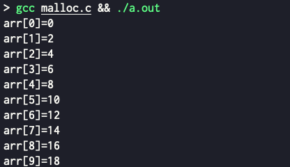
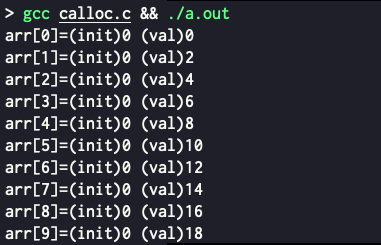

<!DOCTYPE html>
<html><head><title>C - Heap Memory Dynamic Allocation (malloc, calloc, free)</title><meta charSet="utf-8"/><meta name="viewport" content="width=device-width, initial-scale=1.0"/><meta property="og:title" content="C - Heap Memory Dynamic Allocation (malloc, calloc, free)"/><meta property="og:description" content="참고한 것들 Cpp reference - malloc Cpp reference - calloc Heap memory allocation § malloc, calloc 는 C 언어에서 Heap memory 를 동적으로 할당하는 대표적인 함수이고, free 는 이걸 다시 반환하는 함수이다."/><meta property="og:image" content="https://mdg.haeramk.im/static/og-image.png"/><meta property="og:width" content="1200"/><meta property="og:height" content="675"/><link rel="icon" href="../../../../static/icon.png"/><meta name="description" content="참고한 것들 Cpp reference - malloc Cpp reference - calloc Heap memory allocation § malloc, calloc 는 C 언어에서 Heap memory 를 동적으로 할당하는 대표적인 함수이고, free 는 이걸 다시 반환하는 함수이다."/><meta name="generator" content="Quartz"/><link rel="preconnect" href="https://fonts.googleapis.com"/><link rel="preconnect" href="https://fonts.gstatic.com"/><link href="../../../../index.css" rel="stylesheet" type="text/css" spa-preserve/><link href="https://cdn.jsdelivr.net/npm/katex@0.16.0/dist/katex.min.css" rel="stylesheet" type="text/css" spa-preserve/><link href="https://fonts.googleapis.com/css2?family=IBM Plex Mono&amp;family=Gowun Batang:wght@400;700&amp;family=Gowun Dodum:ital,wght@0,400;0,600;1,400;1,600&amp;display=swap" rel="stylesheet" type="text/css" spa-preserve/><script src="../../../../prescript.js" type="application/javascript" spa-preserve></script><script type="application/javascript" spa-preserve>const fetchData = fetch(`../../../../static/contentIndex.json`).then(data => data.json())</script></head><body data-slug="gardens/c-cpp/c/memory/C---Heap-Memory-Dynamic-Allocation-(malloc,-calloc,-free)"><div id="quartz-root" class="page"><div id="quartz-body"><div class="left sidebar"><h1 class="page-title "><a href="../../../..">Madison Digital Garden</a></h1><div class="spacer mobile-only"></div><div class="search "><div id="search-icon"><p>Search</p><div></div><svg tabIndex="0" aria-labelledby="title desc" role="img" xmlns="http://www.w3.org/2000/svg" viewBox="0 0 19.9 19.7"><title id="title">Search</title><desc id="desc">Search</desc><g class="search-path" fill="none"><path stroke-linecap="square" d="M18.5 18.3l-5.4-5.4"></path><circle cx="8" cy="8" r="7"></circle></g></svg></div><div id="search-container"><div id="search-space"><input autocomplete="off" id="search-bar" name="search" type="text" aria-label="Search for something" placeholder="Search for something"/><div id="results-container"></div></div></div></div><div class="darkmode "><input class="toggle" id="darkmode-toggle" type="checkbox" tabIndex="-1"/><label id="toggle-label-light" for="darkmode-toggle" tabIndex="-1"><svg xmlns="http://www.w3.org/2000/svg" xmlnsXlink="http://www.w3.org/1999/xlink" version="1.1" id="dayIcon" x="0px" y="0px" viewBox="0 0 35 35" style="enable-background:new 0 0 35 35;" xmlSpace="preserve"><title>Light mode</title><path d="M6,17.5C6,16.672,5.328,16,4.5,16h-3C0.672,16,0,16.672,0,17.5    S0.672,19,1.5,19h3C5.328,19,6,18.328,6,17.5z M7.5,26c-0.414,0-0.789,0.168-1.061,0.439l-2,2C4.168,28.711,4,29.086,4,29.5    C4,30.328,4.671,31,5.5,31c0.414,0,0.789-0.168,1.06-0.44l2-2C8.832,28.289,9,27.914,9,27.5C9,26.672,8.329,26,7.5,26z M17.5,6    C18.329,6,19,5.328,19,4.5v-3C19,0.672,18.329,0,17.5,0S16,0.672,16,1.5v3C16,5.328,16.671,6,17.5,6z M27.5,9    c0.414,0,0.789-0.168,1.06-0.439l2-2C30.832,6.289,31,5.914,31,5.5C31,4.672,30.329,4,29.5,4c-0.414,0-0.789,0.168-1.061,0.44    l-2,2C26.168,6.711,26,7.086,26,7.5C26,8.328,26.671,9,27.5,9z M6.439,8.561C6.711,8.832,7.086,9,7.5,9C8.328,9,9,8.328,9,7.5    c0-0.414-0.168-0.789-0.439-1.061l-2-2C6.289,4.168,5.914,4,5.5,4C4.672,4,4,4.672,4,5.5c0,0.414,0.168,0.789,0.439,1.06    L6.439,8.561z M33.5,16h-3c-0.828,0-1.5,0.672-1.5,1.5s0.672,1.5,1.5,1.5h3c0.828,0,1.5-0.672,1.5-1.5S34.328,16,33.5,16z     M28.561,26.439C28.289,26.168,27.914,26,27.5,26c-0.828,0-1.5,0.672-1.5,1.5c0,0.414,0.168,0.789,0.439,1.06l2,2    C28.711,30.832,29.086,31,29.5,31c0.828,0,1.5-0.672,1.5-1.5c0-0.414-0.168-0.789-0.439-1.061L28.561,26.439z M17.5,29    c-0.829,0-1.5,0.672-1.5,1.5v3c0,0.828,0.671,1.5,1.5,1.5s1.5-0.672,1.5-1.5v-3C19,29.672,18.329,29,17.5,29z M17.5,7    C11.71,7,7,11.71,7,17.5S11.71,28,17.5,28S28,23.29,28,17.5S23.29,7,17.5,7z M17.5,25c-4.136,0-7.5-3.364-7.5-7.5    c0-4.136,3.364-7.5,7.5-7.5c4.136,0,7.5,3.364,7.5,7.5C25,21.636,21.636,25,17.5,25z"></path></svg></label><label id="toggle-label-dark" for="darkmode-toggle" tabIndex="-1"><svg xmlns="http://www.w3.org/2000/svg" xmlnsXlink="http://www.w3.org/1999/xlink" version="1.1" id="nightIcon" x="0px" y="0px" viewBox="0 0 100 100" style="enable-background='new 0 0 100 100'" xmlSpace="preserve"><title>Dark mode</title><path d="M96.76,66.458c-0.853-0.852-2.15-1.064-3.23-0.534c-6.063,2.991-12.858,4.571-19.655,4.571  C62.022,70.495,50.88,65.88,42.5,57.5C29.043,44.043,25.658,23.536,34.076,6.47c0.532-1.08,0.318-2.379-0.534-3.23  c-0.851-0.852-2.15-1.064-3.23-0.534c-4.918,2.427-9.375,5.619-13.246,9.491c-9.447,9.447-14.65,22.008-14.65,35.369  c0,13.36,5.203,25.921,14.65,35.368s22.008,14.65,35.368,14.65c13.361,0,25.921-5.203,35.369-14.65  c3.872-3.871,7.064-8.328,9.491-13.246C97.826,68.608,97.611,67.309,96.76,66.458z"></path></svg></label></div></div><div class="center"><div class="page-header"><div class="popover-hint"><h1 class="article-title ">C - Heap Memory Dynamic Allocation (malloc, calloc, free)</h1><p class="content-meta ">Oct 09, 2024, 4 min read</p><ul class="tags "><li><a href="../../../../tags/c" class="internal tag-link">#c</a></li><li><a href="../../../../tags/c-memory" class="internal tag-link">#c-memory</a></li></ul></div></div><article class="popover-hint"><blockquote class="callout is-collapsible is-collapsed" data-callout="info" data-callout-fold>
<div class="callout-title">
                  <div class="callout-icon"><svg xmlns="http://www.w3.org/2000/svg" width="100%" height="100%" viewBox="0 0 24 24" fill="none" stroke="currentColor" stroke-width="2" stroke-linecap="round" stroke-linejoin="round"><circle cx="12" cy="12" r="10"></circle><line x1="12" y1="16" x2="12" y2="12"></line><line x1="12" y1="8" x2="12.01" y2="8"></line></svg></div>
                  <div class="callout-title-inner"><p>참고한 것들 </p></div>
                  <svg xmlns="http://www.w3.org/2000/svg" width="24" height="24" viewBox="0 0 24 24" fill="none" stroke="currentColor" stroke-width="2" stroke-linecap="round" stroke-linejoin="round" class="fold">
                  <polyline points="6 9 12 15 18 9"></polyline>
                </svg>
                </div>
<ul>
<li><a href="https://en.cppreference.com/w/c/memory/malloc" class="external">Cpp reference - malloc</a></li>
<li><a href="https://en.cppreference.com/w/c/memory/calloc" class="external">Cpp reference - calloc</a></li>
</ul>
</blockquote>
<h2 id="heap-memory-allocation">Heap memory allocation<a aria-hidden="true" tabindex="-1" href="#heap-memory-allocation" class="internal"> §</a></h2>
<ul>
<li><code>malloc</code>, <code>calloc</code> 는 C 언어에서 <a href="../../../../gardens/os/memory/terms/Virtual-Address-Space,-VAS-(Memory)" class="internal" data-slug="gardens/os/memory/terms/Virtual-Address-Space,-VAS-(Memory)">Heap memory</a> 를 동적으로 할당하는 대표적인 함수이고, <code>free</code> 는 이걸 다시 반환하는 함수이다.
<ul>
<li>참고로 말하자면, 얘네들은 syscall 은 아니다. Heap memory 공간은 사전에 어느정도 늘어나 있고, 이 공간 중 일부를 할당받아 사용하는 것.</li>
</ul>
</li>
<li>동적 할당을 하는 이유에 대해서는, 어떤 놈의 lifecycle 을 내 맘대로 가져가고 싶기 때문이다.
<ul>
<li>즉, static allocation 을 위해 할당된 메모리 공간은 lifecycle 에 제약사항이 있기 때문이다.
<ul>
<li>가령 함수 내의 local variable 같은 경우에는 <a href="../../../../gardens/os/memory/terms/Virtual-Address-Space,-VAS-(Memory)" class="internal" data-slug="gardens/os/memory/terms/Virtual-Address-Space,-VAS-(Memory)">Stack memory</a> 에 저장되기 때문에 함수가 종료되면 function record 가 날라가면서 같이 반환되고,</li>
<li>Global variable 같은 경우에는 process 가 살아있는 동안 계속 살아있기 때문.</li>
</ul>
</li>
<li>근데 dynamic allocation 을 하면 언제 생성하고 언제 사라질지를 programmer 가 직접 제어할 수 있다.</li>
</ul>
</li>
<li>그럼 하나하나 알아보자.</li>
</ul>
<h2 id="malloc-memory-allocation"><code>malloc</code>: Memory allocation<a aria-hidden="true" tabindex="-1" href="#malloc-memory-allocation" class="internal"> §</a></h2>
<blockquote class="callout is-collapsible is-collapsed" data-callout="tip" data-callout-fold>
<div class="callout-title">
                  <div class="callout-icon"><svg xmlns="http://www.w3.org/2000/svg" width="100%" height="100%" viewBox="0 0 24 24" fill="none" stroke="currentColor" stroke-width="2" stroke-linecap="round" stroke-linejoin="round"><path d="M8.5 14.5A2.5 2.5 0 0 0 11 12c0-1.38-.5-2-1-3-1.072-2.143-.224-4.054 2-6 .5 2.5 2 4.9 4 6.5 2 1.6 3 3.5 3 5.5a7 7 0 1 1-14 0c0-1.153.433-2.294 1-3a2.5 2.5 0 0 0 2.5 2.5z"></path></svg></div>
                  <div class="callout-title-inner"><p>Header file: <code>stdlib.h</code></p></div>
                  <svg xmlns="http://www.w3.org/2000/svg" width="24" height="24" viewBox="0 0 24 24" fill="none" stroke="currentColor" stroke-width="2" stroke-linecap="round" stroke-linejoin="round" class="fold">
                  <polyline points="6 9 12 15 18 9"></polyline>
                </svg>
                </div>
</blockquote>
<ul>
<li><code>malloc</code> 은 <em>Memory allocation</em> 의 약자로 인자로 준 크기 만큼만 할당해 주는 제일 단순한 형태의 함수이다.</li>
<li>함수 선언은 다음과 같다:
<ul>
<li>얼만큼 할당할지 (<code>size</code>) 를 인자로 받아 그만큼을 할당해 주고,</li>
<li>시작 포인터 (<code>void *</code>) 를 반환한다.</li>
</ul>
</li>
</ul>
<div data-rehype-pretty-code-fragment><pre style="background-color:var(--shiki-color-background);" tabindex="0" data-language="c" data-theme="default"><code data-language="c" data-theme="default"><span data-line><span style="color:var(--shiki-token-keyword);">void</span><span style="color:var(--shiki-color-text);"> </span><span style="color:var(--shiki-token-keyword);">*</span><span style="color:var(--shiki-token-function);">malloc</span><span style="color:var(--shiki-color-text);">(</span><span style="color:var(--shiki-token-keyword);">size_t</span><span style="color:var(--shiki-color-text);"> size);</span></span></code></pre></div>
<ul>
<li>한 가지 주의할 점은 <code>malloc</code> 은 내용을 초기화해주지는 않는다는 것이다.
<ul>
<li>즉, 쓰레기 값이 충분히 들어있을 수 있으니 항상 초기화를 해주는 습관을 들이자.</li>
</ul>
</li>
<li>배열을 선언하는 예시 참고해라:
<ul>
<li>그냥 크기 10 짜리 배열을 선언하고, index 에 2를 곱한 값으로 배열을 채워 출력해보는 예시다.</li>
</ul>
</li>
</ul>
<div data-rehype-pretty-code-fragment><pre style="background-color:var(--shiki-color-background);" tabindex="0" data-language="c" data-theme="default"><code data-language="c" data-theme="default"><span data-line><span style="color:var(--shiki-token-keyword);">#include</span><span style="color:var(--shiki-color-text);"> </span><span style="color:var(--shiki-token-string-expression);">&lt;stdio.h></span></span>
<span data-line><span style="color:var(--shiki-token-keyword);">#include</span><span style="color:var(--shiki-color-text);"> </span><span style="color:var(--shiki-token-string-expression);">&lt;stdlib.h></span></span>
<span data-line> </span>
<span data-line><span style="color:var(--shiki-token-keyword);">int</span><span style="color:var(--shiki-color-text);"> </span><span style="color:var(--shiki-token-function);">main</span><span style="color:var(--shiki-color-text);">() {</span></span>
<span data-line data-highlighted-line><span style="color:var(--shiki-color-text);">	</span><span style="color:var(--shiki-token-keyword);">int</span><span style="color:var(--shiki-color-text);"> </span><span style="color:var(--shiki-token-keyword);">*</span><span style="color:var(--shiki-color-text);">arr </span><span style="color:var(--shiki-token-keyword);">=</span><span style="color:var(--shiki-color-text);"> </span><span style="color:var(--shiki-token-function);">malloc(</span><span style="color:var(--shiki-token-constant);">10</span><span style="color:var(--shiki-token-function);"> </span><span style="color:var(--shiki-token-keyword);">*</span><span style="color:var(--shiki-token-function);"> </span><span style="color:var(--shiki-token-keyword);">sizeof</span><span style="color:var(--shiki-token-function);">(</span><span style="color:var(--shiki-token-keyword);">int</span><span style="color:var(--shiki-token-function);">))</span><span style="color:var(--shiki-color-text);">;</span></span>
<span data-line><span style="color:var(--shiki-color-text);">	</span><span style="color:var(--shiki-token-keyword);">for</span><span style="color:var(--shiki-color-text);"> (</span><span style="color:var(--shiki-token-keyword);">int</span><span style="color:var(--shiki-color-text);"> i </span><span style="color:var(--shiki-token-keyword);">=</span><span style="color:var(--shiki-color-text);"> </span><span style="color:var(--shiki-token-constant);">0</span><span style="color:var(--shiki-color-text);">; i </span><span style="color:var(--shiki-token-keyword);">&lt;</span><span style="color:var(--shiki-color-text);"> </span><span style="color:var(--shiki-token-constant);">10</span><span style="color:var(--shiki-color-text);">; i</span><span style="color:var(--shiki-token-keyword);">++</span><span style="color:var(--shiki-color-text);">) {</span></span>
<span data-line><span style="color:var(--shiki-color-text);">		arr[i] </span><span style="color:var(--shiki-token-keyword);">=</span><span style="color:var(--shiki-color-text);"> i </span><span style="color:var(--shiki-token-keyword);">*</span><span style="color:var(--shiki-color-text);"> </span><span style="color:var(--shiki-token-constant);">2</span><span style="color:var(--shiki-color-text);">;</span></span>
<span data-line><span style="color:var(--shiki-color-text);">		</span><span style="color:var(--shiki-token-function);">printf(</span><span style="color:var(--shiki-token-string-expression);">&quot;arr[</span><span style="color:var(--shiki-token-constant);">%d</span><span style="color:var(--shiki-token-string-expression);">]=</span><span style="color:var(--shiki-token-constant);">%d</span><span style="color:var(--shiki-token-string-expression);">\n&quot;</span><span style="color:var(--shiki-token-punctuation);">,</span><span style="color:var(--shiki-token-function);"> i</span><span style="color:var(--shiki-token-punctuation);">,</span><span style="color:var(--shiki-token-function);"> arr[i])</span><span style="color:var(--shiki-color-text);">;</span></span>
<span data-line><span style="color:var(--shiki-color-text);">	}</span></span>
<span data-line data-highlighted-line><span style="color:var(--shiki-color-text);">	</span><span style="color:var(--shiki-token-function);">free(arr)</span><span style="color:var(--shiki-color-text);">;</span></span>
<span data-line><span style="color:var(--shiki-color-text);">}</span></span></code></pre></div>
<p></p>
<h2 id="calloc-contiguous-allocation"><code>calloc</code>: Contiguous allocation<a aria-hidden="true" tabindex="-1" href="#calloc-contiguous-allocation" class="internal"> §</a></h2>
<blockquote class="callout is-collapsible is-collapsed" data-callout="tip" data-callout-fold>
<div class="callout-title">
                  <div class="callout-icon"><svg xmlns="http://www.w3.org/2000/svg" width="100%" height="100%" viewBox="0 0 24 24" fill="none" stroke="currentColor" stroke-width="2" stroke-linecap="round" stroke-linejoin="round"><path d="M8.5 14.5A2.5 2.5 0 0 0 11 12c0-1.38-.5-2-1-3-1.072-2.143-.224-4.054 2-6 .5 2.5 2 4.9 4 6.5 2 1.6 3 3.5 3 5.5a7 7 0 1 1-14 0c0-1.153.433-2.294 1-3a2.5 2.5 0 0 0 2.5 2.5z"></path></svg></div>
                  <div class="callout-title-inner"><p>Header file: <code>stdlib.h</code></p></div>
                  <svg xmlns="http://www.w3.org/2000/svg" width="24" height="24" viewBox="0 0 24 24" fill="none" stroke="currentColor" stroke-width="2" stroke-linecap="round" stroke-linejoin="round" class="fold">
                  <polyline points="6 9 12 15 18 9"></polyline>
                </svg>
                </div>
</blockquote>
<ul>
<li><code>calloc</code> 은 <em>Contiguous allocation</em> 의 약자로 <a href="#malloc-memory-allocation" class="internal">malloc</a> 이랑 유사하지만 배열을 위한 공간을 할당하기 위한 좀 더 편리한 기능을 제공한다.
<ul>
<li>일단 <code>malloc</code> 에서는 값들을 초기화해주지 않는다. 즉, 쓰레기 값이 들어있을 수도 있는 것. 근데 <code>calloc</code> 은 <code>0</code> 으로 초기화해준다.</li>
<li>그리고 인자도 좀 다르다. “배열” 을 위한 공간을 할당해주는 만큼, “인자의 갯수” 와 “인자의 크기” 를 인자로 받는다.</li>
</ul>
</li>
<li>따라서 함수 선언은 다음과 같다:</li>
</ul>
<div data-rehype-pretty-code-fragment><pre style="background-color:var(--shiki-color-background);" tabindex="0" data-language="c" data-theme="default"><code data-language="c" data-theme="default"><span data-line><span style="color:var(--shiki-token-keyword);">void</span><span style="color:var(--shiki-color-text);"> </span><span style="color:var(--shiki-token-keyword);">*</span><span style="color:var(--shiki-token-function);">calloc</span><span style="color:var(--shiki-color-text);">(</span><span style="color:var(--shiki-token-keyword);">size_t</span><span style="color:var(--shiki-color-text);"> count</span><span style="color:var(--shiki-token-punctuation);">,</span><span style="color:var(--shiki-color-text);"> </span><span style="color:var(--shiki-token-keyword);">size_t</span><span style="color:var(--shiki-color-text);"> entry_size);</span></span></code></pre></div>
<ul>
<li>위에서의 배열 선언 예시를 <code>calloc</code> 으로 해보면:</li>
</ul>
<div data-rehype-pretty-code-fragment><pre style="background-color:var(--shiki-color-background);" tabindex="0" data-language="c" data-theme="default"><code data-language="c" data-theme="default"><span data-line><span style="color:var(--shiki-token-keyword);">#include</span><span style="color:var(--shiki-color-text);"> </span><span style="color:var(--shiki-token-string-expression);">&lt;stdio.h></span></span>
<span data-line><span style="color:var(--shiki-token-keyword);">#include</span><span style="color:var(--shiki-color-text);"> </span><span style="color:var(--shiki-token-string-expression);">&lt;stdlib.h></span></span>
<span data-line> </span>
<span data-line><span style="color:var(--shiki-token-keyword);">int</span><span style="color:var(--shiki-color-text);"> </span><span style="color:var(--shiki-token-function);">main</span><span style="color:var(--shiki-color-text);">() {</span></span>
<span data-line data-highlighted-line><span style="color:var(--shiki-color-text);">	</span><span style="color:var(--shiki-token-keyword);">int</span><span style="color:var(--shiki-color-text);"> </span><span style="color:var(--shiki-token-keyword);">*</span><span style="color:var(--shiki-color-text);">arr </span><span style="color:var(--shiki-token-keyword);">=</span><span style="color:var(--shiki-color-text);"> </span><span style="color:var(--shiki-token-function);">calloc(</span><span style="color:var(--shiki-token-constant);">10</span><span style="color:var(--shiki-token-punctuation);">,</span><span style="color:var(--shiki-token-function);"> </span><span style="color:var(--shiki-token-keyword);">sizeof</span><span style="color:var(--shiki-token-function);">(</span><span style="color:var(--shiki-token-keyword);">int</span><span style="color:var(--shiki-token-function);">))</span><span style="color:var(--shiki-color-text);">;</span></span>
<span data-line><span style="color:var(--shiki-color-text);">	</span><span style="color:var(--shiki-token-keyword);">for</span><span style="color:var(--shiki-color-text);"> (</span><span style="color:var(--shiki-token-keyword);">int</span><span style="color:var(--shiki-color-text);"> i </span><span style="color:var(--shiki-token-keyword);">=</span><span style="color:var(--shiki-color-text);"> </span><span style="color:var(--shiki-token-constant);">0</span><span style="color:var(--shiki-color-text);">; i </span><span style="color:var(--shiki-token-keyword);">&lt;</span><span style="color:var(--shiki-color-text);"> </span><span style="color:var(--shiki-token-constant);">10</span><span style="color:var(--shiki-color-text);">; i</span><span style="color:var(--shiki-token-keyword);">++</span><span style="color:var(--shiki-color-text);">) {</span></span>
<span data-line><span style="color:var(--shiki-color-text);">		</span><span style="color:var(--shiki-token-function);">printf(</span><span style="color:var(--shiki-token-string-expression);">&quot;arr[</span><span style="color:var(--shiki-token-constant);">%d</span><span style="color:var(--shiki-token-string-expression);">]=(init)</span><span style="color:var(--shiki-token-constant);">%d</span><span style="color:var(--shiki-token-string-expression);"> &quot;</span><span style="color:var(--shiki-token-punctuation);">,</span><span style="color:var(--shiki-token-function);"> i</span><span style="color:var(--shiki-token-punctuation);">,</span><span style="color:var(--shiki-token-function);"> arr[i])</span><span style="color:var(--shiki-color-text);">;</span></span>
<span data-line><span style="color:var(--shiki-color-text);">		arr[i] </span><span style="color:var(--shiki-token-keyword);">=</span><span style="color:var(--shiki-color-text);"> i </span><span style="color:var(--shiki-token-keyword);">*</span><span style="color:var(--shiki-color-text);"> </span><span style="color:var(--shiki-token-constant);">2</span><span style="color:var(--shiki-color-text);">;</span></span>
<span data-line><span style="color:var(--shiki-color-text);">		</span><span style="color:var(--shiki-token-function);">printf(</span><span style="color:var(--shiki-token-string-expression);">&quot;(val)</span><span style="color:var(--shiki-token-constant);">%d</span><span style="color:var(--shiki-token-string-expression);">\n&quot;</span><span style="color:var(--shiki-token-punctuation);">,</span><span style="color:var(--shiki-token-function);"> arr[i])</span><span style="color:var(--shiki-color-text);">;</span></span>
<span data-line><span style="color:var(--shiki-color-text);">	}</span></span>
<span data-line data-highlighted-line><span style="color:var(--shiki-color-text);">	</span><span style="color:var(--shiki-token-function);">free(arr)</span><span style="color:var(--shiki-color-text);">;</span></span>
<span data-line><span style="color:var(--shiki-color-text);">}</span></span></code></pre></div>
<p></p></article></div><div class="right sidebar"><div class="graph "><h3>Graph View</h3><div class="graph-outer"><div id="graph-container" data-cfg="{&quot;drag&quot;:true,&quot;zoom&quot;:true,&quot;depth&quot;:1,&quot;scale&quot;:1.1,&quot;repelForce&quot;:0.5,&quot;centerForce&quot;:0.3,&quot;linkDistance&quot;:30,&quot;fontSize&quot;:0.6,&quot;opacityScale&quot;:1,&quot;showTags&quot;:true,&quot;removeTags&quot;:[]}"></div><svg version="1.1" id="global-graph-icon" xmlns="http://www.w3.org/2000/svg" xmlnsXlink="http://www.w3.org/1999/xlink" x="0px" y="0px" viewBox="0 0 55 55" fill="currentColor" xmlSpace="preserve"><path d="M49,0c-3.309,0-6,2.691-6,6c0,1.035,0.263,2.009,0.726,2.86l-9.829,9.829C32.542,17.634,30.846,17,29,17
	s-3.542,0.634-4.898,1.688l-7.669-7.669C16.785,10.424,17,9.74,17,9c0-2.206-1.794-4-4-4S9,6.794,9,9s1.794,4,4,4
	c0.74,0,1.424-0.215,2.019-0.567l7.669,7.669C21.634,21.458,21,23.154,21,25s0.634,3.542,1.688,4.897L10.024,42.562
	C8.958,41.595,7.549,41,6,41c-3.309,0-6,2.691-6,6s2.691,6,6,6s6-2.691,6-6c0-1.035-0.263-2.009-0.726-2.86l12.829-12.829
	c1.106,0.86,2.44,1.436,3.898,1.619v10.16c-2.833,0.478-5,2.942-5,5.91c0,3.309,2.691,6,6,6s6-2.691,6-6c0-2.967-2.167-5.431-5-5.91
	v-10.16c1.458-0.183,2.792-0.759,3.898-1.619l7.669,7.669C41.215,39.576,41,40.26,41,41c0,2.206,1.794,4,4,4s4-1.794,4-4
	s-1.794-4-4-4c-0.74,0-1.424,0.215-2.019,0.567l-7.669-7.669C36.366,28.542,37,26.846,37,25s-0.634-3.542-1.688-4.897l9.665-9.665
	C46.042,11.405,47.451,12,49,12c3.309,0,6-2.691,6-6S52.309,0,49,0z M11,9c0-1.103,0.897-2,2-2s2,0.897,2,2s-0.897,2-2,2
	S11,10.103,11,9z M6,51c-2.206,0-4-1.794-4-4s1.794-4,4-4s4,1.794,4,4S8.206,51,6,51z M33,49c0,2.206-1.794,4-4,4s-4-1.794-4-4
	s1.794-4,4-4S33,46.794,33,49z M29,31c-3.309,0-6-2.691-6-6s2.691-6,6-6s6,2.691,6,6S32.309,31,29,31z M47,41c0,1.103-0.897,2-2,2
	s-2-0.897-2-2s0.897-2,2-2S47,39.897,47,41z M49,10c-2.206,0-4-1.794-4-4s1.794-4,4-4s4,1.794,4,4S51.206,10,49,10z"></path></svg></div><div id="global-graph-outer"><div id="global-graph-container" data-cfg="{&quot;drag&quot;:true,&quot;zoom&quot;:true,&quot;depth&quot;:-1,&quot;scale&quot;:0.9,&quot;repelForce&quot;:0.5,&quot;centerForce&quot;:0.3,&quot;linkDistance&quot;:30,&quot;fontSize&quot;:0.6,&quot;opacityScale&quot;:1,&quot;showTags&quot;:true,&quot;removeTags&quot;:[]}"></div></div></div><div class="toc desktop-only"><button type="button" id="toc"><h3>Table of Contents</h3><svg xmlns="http://www.w3.org/2000/svg" width="24" height="24" viewBox="0 0 24 24" fill="none" stroke="currentColor" stroke-width="2" stroke-linecap="round" stroke-linejoin="round" class="fold"><polyline points="6 9 12 15 18 9"></polyline></svg></button><div id="toc-content"><ul class="overflow"><li class="depth-0"><a href="#heap-memory-allocation" data-for="heap-memory-allocation">Heap memory allocation</a></li><li class="depth-0"><a href="#malloc-memory-allocation" data-for="malloc-memory-allocation">malloc: Memory allocation</a></li><li class="depth-0"><a href="#calloc-contiguous-allocation" data-for="calloc-contiguous-allocation">calloc: Contiguous allocation</a></li></ul></div></div><div class="backlinks "><h3>Backlinks</h3><ul class="overflow"><li><a href="../../../../gardens/c-cpp/c/io/C---Direct-IO-(O_DIRECT)" class="internal">C - Direct IO (O_DIRECT)</a></li><li><a href="../../../../gardens/os/memory/terms/Virtual-Address-Space,-VAS-(Memory)" class="internal">Virtual Address Space, VAS (Memory)</a></li></ul></div></div></div><footer class><hr/><p>Created with <a href="https://quartz.jzhao.xyz/">Quartz v4.1.0</a>, © 2024</p><ul><li><a href="https://github.com/haeramkeem">GitHub</a></li><li><a href="www.linkedin.com/in/haeram-kim-277404220">LinkedIn</a></li><li><a href="mailto:haeram.kim1@gmail.com">Email</a></li></ul></footer></div></body><script type="application/javascript">// quartz/components/scripts/quartz/components/scripts/callout.inline.ts
function toggleCallout() {
  const outerBlock = this.parentElement;
  outerBlock.classList.toggle(`is-collapsed`);
  const collapsed = outerBlock.classList.contains(`is-collapsed`);
  const height = collapsed ? this.scrollHeight : outerBlock.scrollHeight;
  outerBlock.style.maxHeight = height + `px`;
  let current = outerBlock;
  let parent = outerBlock.parentElement;
  while (parent) {
    if (!parent.classList.contains(`callout`)) {
      return;
    }
    const collapsed2 = parent.classList.contains(`is-collapsed`);
    const height2 = collapsed2 ? parent.scrollHeight : parent.scrollHeight + current.scrollHeight;
    parent.style.maxHeight = height2 + `px`;
    current = parent;
    parent = parent.parentElement;
  }
}
function setupCallout() {
  const collapsible = document.getElementsByClassName(
    `callout is-collapsible`
  );
  for (const div of collapsible) {
    const title = div.firstElementChild;
    if (title) {
      title.removeEventListener(`click`, toggleCallout);
      title.addEventListener(`click`, toggleCallout);
      const collapsed = div.classList.contains(`is-collapsed`);
      const height = collapsed ? title.scrollHeight : div.scrollHeight;
      div.style.maxHeight = height + `px`;
    }
  }
}
document.addEventListener(`nav`, setupCallout);
window.addEventListener(`resize`, setupCallout);
</script><script type="module">
          import mermaid from 'https://cdn.jsdelivr.net/npm/mermaid/dist/mermaid.esm.min.mjs';
          const darkMode = document.documentElement.getAttribute('saved-theme') === 'dark'
          mermaid.initialize({
            startOnLoad: false,
            securityLevel: 'loose',
            theme: darkMode ? 'dark' : 'default'
          });
          document.addEventListener('nav', async () => {
            await mermaid.run({
              querySelector: '.mermaid'
            })
          });
          </script><script src="https://cdn.jsdelivr.net/npm/katex@0.16.7/dist/contrib/copy-tex.min.js" type="application/javascript"></script><script src="https://www.googletagmanager.com/gtag/js?id=G-N68CCP1QHG" type="application/javascript"></script><script src="../../../../postscript.js" type="module"></script></html>